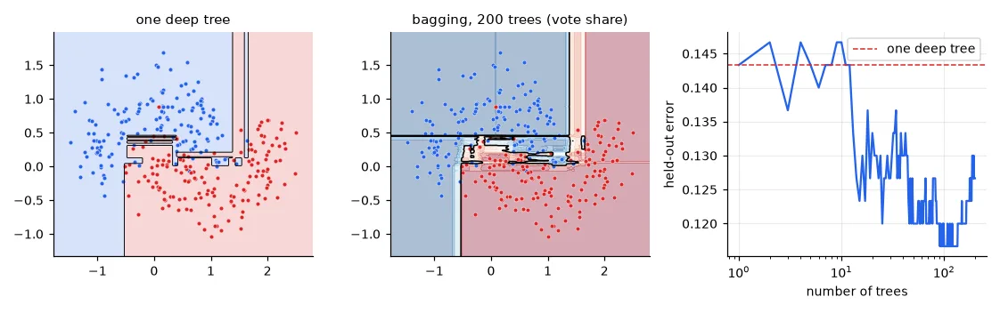
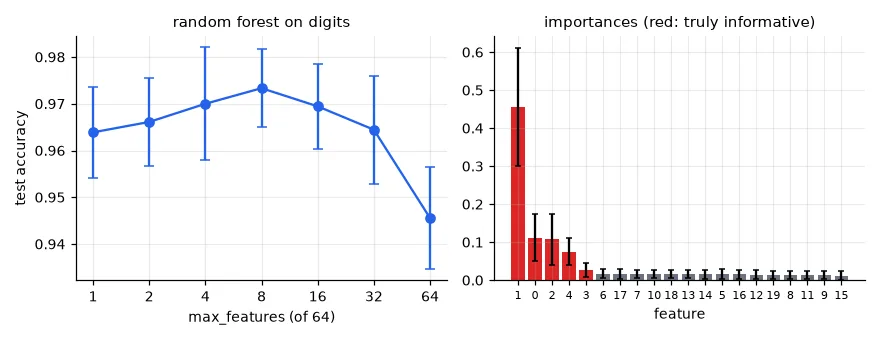
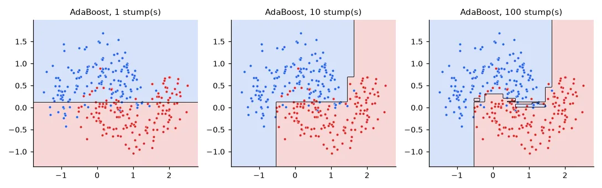
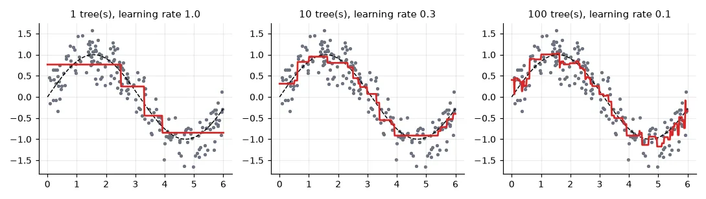
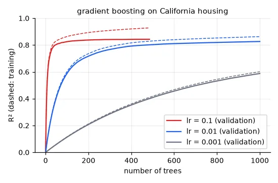

Two ways to combine models#
Lesson 07 ended with a problem: deep trees have low bias and high variance. Ensembles attack the two sides of the bias–variance trade-off differently:
- Bagging and random forests average many independent, low-bias, high-variance models. Averaging keeps the bias and cuts the variance.
- Boosting adds many simple, high-bias models one after the other, each one correcting the mistakes of the ensemble so far. It drives the bias down.
Bagging from scratch#
If we had many independent training sets, we could train one tree on each and average: the noise of the individual trees would cancel. We have only one set, so we fake the others with the bootstrap: draw \(N\) samples with replacement from the \(N\) training samples. Each bootstrap sample contains about \(1 - 1/e \approx 63\%\) of the distinct original samples, some of them several times.
def bagging(X, y, n_trees, rng):
"""Train each tree on a bootstrap sample: n draws WITH replacement from the training set."""
trees = []
for _ in range(n_trees):
idx = rng.integers(0, len(y), len(y))
trees.append(DecisionTreeClassifier(random_state=int(rng.integers(1 << 30))).fit(X[idx], y[idx]))
return trees
def vote(trees, X):
"""Fraction of trees voting for class 1 (a 'soft' prediction)."""
return np.mean([t.predict(X) for t in trees], axis=0)
rng = np.random.default_rng(0)
trees = bagging(Xtr, ytr, 200, rng)
single = DecisionTreeClassifier(random_state=0).fit(Xtr, ytr)
print("one deep tree : held-out error %.3f" % (1 - single.score(Xte, yte)))
for n in (1, 10, 50, 200):
print(f"bagging, {n:3d} trees: held-out error {np.mean((vote(trees[:n], Xte) > 0.5) != yte):.3f}")
print("unique samples in a bootstrap sample: %.1f%% (theory: 1 - 1/e = 63.2%%)"
% (100 * np.mean([len(np.unique(rng.integers(0, 1000, 1000))) / 1000 for _ in range(200)])))
one deep tree : held-out error 0.143
bagging, 1 trees: held-out error 0.143
bagging, 10 trees: held-out error 0.147
bagging, 50 trees: held-out error 0.120
bagging, 200 trees: held-out error 0.127
unique samples in a bootstrap sample: 63.2% (theory: 1 - 1/e = 63.2%)

The error drops and then plateaus: once there are enough trees, adding more doesn't hurt (no overfitting from the number of trees) but doesn't help either. The ~37% of samples a tree never saw (out-of-bag) give a free validation estimate (oob_score=True in scikit-learn).
Random forests: decorrelate the trees#
Averaging \(B\) models of variance \(\sigma^2\) with pairwise correlation \(\rho\) gives variance \(\rho\sigma^2 + \frac{1-\rho}{B}\sigma^2\). More trees kill the second term, but not the first: bagged trees are correlated, because they all start with the same strong features. A random forest adds a second source of randomness — at each split, only a random subset of max_features features is considered — so the trees differ more and the average is better.
Xd, yd = load_digits(return_X_y=True) # (1797, 64): 8x8 images, one feature per pixel
results = {}
for m in (1, 2, 4, 8, 16, 32, 64):
acc = []
for rep in range(5):
a, b, c, d = train_test_split(Xd, yd, test_size=0.2, random_state=rep)
acc.append(RandomForestClassifier(n_estimators=100, max_features=m, random_state=rep,
n_jobs=-1).fit(a, c).score(b, d))
results[m] = (np.mean(acc), np.std(acc))
print(f"max_features = {m:2d}: accuracy {results[m][0]:.4f} ± {results[m][1]:.4f}")
max_features = 1: accuracy 0.9639 ± 0.0098
max_features = 2: accuracy 0.9661 ± 0.0094
max_features = 4: accuracy 0.9700 ± 0.0121
max_features = 8: accuracy 0.9733 ± 0.0084
max_features = 16: accuracy 0.9694 ± 0.0091
max_features = 32: accuracy 0.9644 ± 0.0116
max_features = 64: accuracy 0.9456 ± 0.0109
On the 8×8 digits, 64 features = plain bagging (94.6%). Considering only 8 per split — \(\sqrt{64}\), scikit-learn's default for classification — gives 97.3%. Too few and each split is close to random; too many and the trees are all alike. Note the error bars: over 5 random splits, differences under ~1 point are noise.
Feature importance#
Each split reduces the impurity; summing those reductions per feature over all trees gives the impurity-based importance.
Xi, yi = make_classification(n_samples=1000, n_features=20, n_informative=5, n_redundant=0,
shuffle=False, random_state=0) # features 0-4 informative, 5-19 noise
rf = RandomForestClassifier(n_estimators=200, random_state=0, n_jobs=-1).fit(Xi, yi)
imp = rf.feature_importances_
std = np.std([t.feature_importances_ for t in rf.estimators_], axis=0)
order = np.argsort(-imp)
print("top 6 features:", order[:6].tolist(), "| importance of the 5 informative: %.2f, of the 15 noise: %.2f"
% (imp[:5].sum(), imp[5:].sum()))
top 6 features: [1, 0, 2, 4, 3, 6] | importance of the 5 informative: 0.78, of the 15 noise: 0.22

The five informative features come out on top. But the 15 pure-noise features still collect 22% of the importance: deep trees split on noise too, and impurity importance favours features with many distinct values. Permutation importance (shuffle one feature on held-out data and measure the drop in accuracy, sklearn.inspection.permutation_importance) is the more reliable measure.
Boosting#
AdaBoost#
Train a stump (a depth-1 tree). Increase the weight of the samples it got wrong, train the next stump on the re-weighted data, and so on. Each stump gets a vote \(\alpha_t = \frac12\log\frac{1 - \varepsilon_t}{\varepsilon_t}\) that grows as its weighted error \(\varepsilon_t\) shrinks; the final classifier is the sign of the weighted sum.
def adaboost(X, y, rounds):
"""Discrete AdaBoost with decision stumps; labels must be -1/+1."""
w = np.full(len(y), 1 / len(y)) # sample weights
stumps, alphas = [], []
for _ in range(rounds):
stump = DecisionTreeClassifier(max_depth=1).fit(X, y, sample_weight=w)
pred = stump.predict(X)
err = np.sum(w[pred != y]) # weighted error, < 0.5 for a useful stump
alpha = 0.5 * np.log((1 - err) / max(err, 1e-12))
w *= np.exp(-alpha * y * pred) # misclassified samples gain weight
w /= w.sum()
stumps.append(stump)
alphas.append(alpha)
return lambda Z: np.sign(sum(a * s.predict(Z) for a, s in zip(alphas, stumps)))
ys_tr, ys_te = 2 * ytr - 1, 2 * yte - 1
for rounds in (1, 10, 100, 400):
f = adaboost(Xtr, ys_tr, rounds)
print(f"AdaBoost, {rounds:3d} stumps: train error {np.mean(f(Xtr) != ys_tr):.3f}, "
f"held-out error {np.mean(f(Xte) != ys_te):.3f}")
AdaBoost, 1 stumps: train error 0.190, held-out error 0.213
AdaBoost, 10 stumps: train error 0.077, held-out error 0.133
AdaBoost, 100 stumps: train error 0.050, held-out error 0.123
AdaBoost, 400 stumps: train error 0.000, held-out error 0.133

Gradient boosting#
AdaBoost turns out to be a special case of a more general idea. Build the model as a sum \(F(x) = \sum_t \eta\, h_t(x)\), and at each step fit the new tree \(h_t\) to the negative gradient of the loss with respect to the current predictions — gradient descent (lesson 02), but in the space of functions. For the squared loss the negative gradient is simply the residual \(y - F(x)\):
xr = np.sort(np.random.rand(200) * 6)
yr = np.sin(xr) + 0.3 * np.random.randn(200)
def gradient_boosting(x, y, n_trees, lr):
"""Squared loss: each new tree fits the residuals (= minus the gradient) of the current model."""
pred = np.full_like(y, y.mean())
trees = []
for _ in range(n_trees):
residual = y - pred
t = DecisionTreeRegressor(max_depth=2).fit(x[:, None], residual)
pred += lr * t.predict(x[:, None])
trees.append(t)
return lambda z: y.mean() + lr * sum(t.predict(z[:, None]) for t in trees)
for n_trees, lr in [(1, 1.0), (10, 0.3), (100, 0.1)]:
f = gradient_boosting(xr, yr, n_trees, lr)
print(f"{n_trees:3d} trees, lr {lr}: training MSE {np.mean((f(xr) - yr) ** 2):.3f}")
1 trees, lr 1.0: training MSE 0.133
10 trees, lr 0.3: training MSE 0.077
100 trees, lr 0.1: training MSE 0.057

The learning rate \(\eta\) (shrinkage) and the number of trees trade off against each other: a small \(\eta\) needs more trees but generalises better. With early stopping on a validation fraction, scikit-learn finds the number of trees automatically:
Xh, yh = fetch_california_housing(data_home=str(U.CACHE), return_X_y=True)
fig, axes = U.figure(1, 1, size=(5.0, 3.3))
for lr, c in zip((0.1, 0.01, 0.001), (U.RED, U.BLUE, U.GRAY)):
hgb = HistGradientBoostingRegressor(max_iter=1000, learning_rate=lr, max_depth=5, early_stopping=True,
validation_fraction=0.2, n_iter_no_change=50, scoring="r2",
random_state=0).fit(Xh, yh)
print(f"lr = {lr:<5}: {hgb.n_iter_:4d} trees, best validation R² {max(hgb.validation_score_):.3f}")
axes[0, 0].plot(hgb.train_score_, color=c, lw=1, ls="--")
axes[0, 0].plot(hgb.validation_score_, color=c, label=f"lr = {lr} (validation)")
lr = 0.1 : 485 trees, best validation R² 0.843
lr = 0.01 : 1000 trees, best validation R² 0.826
lr = 0.001: 1000 trees, best validation R² 0.588

Judge the learning rate on validation data
My lab answer said lr = 0.1 "is too fast and overfits" and 0.01 is optimal. The first loop of that notebook scored each model on its own training data (hgb.score(X, y) after hgb.fit(X, y)), and the conclusion was read off curves without comparing their best validation values. Measured on validation data, 0.1 reaches the best R² (0.843) and early stopping prevents it from overfitting; 0.01 is slightly worse because 1,000 trees are not enough for it. With a larger budget, smaller learning rates usually win by a little — at a large cost in time.
The benchmark: forest cover types#
581,012 patches of forest in Colorado, 54 cartographic features (elevation, slope, soil type…), 7 cover types. We train on 100,000 and test on 50,000:
Xc, yc = fetch_covtype(data_home=str(U.CACHE), return_X_y=True) # (581012, 54), 7 forest cover types
Xa, Xb, ya, yb = train_test_split(Xc, yc, train_size=100_000, test_size=50_000, stratify=yc, random_state=0)
models = {
"AdaBoost (100 trees, depth 5)": AdaBoostClassifier(DecisionTreeClassifier(max_depth=5), n_estimators=100,
random_state=0),
"random forest (100, depth 5)": RandomForestClassifier(100, max_depth=5, n_jobs=-1, random_state=0),
"random forest (100, full depth)": RandomForestClassifier(100, n_jobs=-1, random_state=0),
"hist. GB (100, depth 5)": HistGradientBoostingClassifier(max_iter=100, max_depth=5, random_state=0),
"hist. GB (300, 63 leaves, l2 = 0)": HistGradientBoostingClassifier(max_iter=300, max_leaf_nodes=63,
early_stopping=False, random_state=0),
"hist. GB (300, 63 leaves, l2 = 1)": HistGradientBoostingClassifier(max_iter=300, max_leaf_nodes=63,
l2_regularization=1.0,
early_stopping=False, random_state=0),
}
for name, m in models.items():
t0 = time.time()
m.fit(Xa, ya)
t1 = time.time()
acc = m.score(Xb, yb)
print(f"{name:34s} test accuracy {acc:.3f} (train {t1 - t0:5.1f} s, predict {time.time() - t1:4.1f} s)")
AdaBoost (100 trees, depth 5) test accuracy 0.623 (train 40.4 s, predict 0.7 s)
random forest (100, depth 5) test accuracy 0.676 (train 2.1 s, predict 0.1 s)
random forest (100, full depth) test accuracy 0.914 (train 5.7 s, predict 0.5 s)
hist. GB (100, depth 5) test accuracy 0.803 (train 6.4 s, predict 0.6 s)
hist. GB (300, 63 leaves, l2 = 0) test accuracy 0.767 (train 32.3 s, predict 3.5 s)
hist. GB (300, 63 leaves, l2 = 1) test accuracy 0.924 (train 84.6 s, predict 2.7 s)
Three lessons in one table:
- Random forests want deep trees. The lab compared models with the same
max_depth=5for everybody and concluded that gradient boosting was far ahead (80% vs 68%). That handicaps the forest: its whole design is to average low-bias trees. Fully grown, it reaches 91.4% in 6 seconds. - Boosting wants shallow trees, many of them. And it beats the forest when given enough capacity — 92.4%.
- Boosting can blow up. The same 300 bigger trees without L2 regularisation drop to 76.7%, below the small model. Each leaf value in gradient boosting is a Newton step, \(-\sum g_i / (\sum h_i + \lambda)\); in tiny leaves of rare classes the curvature \(\sum h_i\) is almost zero, and the step is enormous. I checked: without regularisation the largest leaf value is 182,760 (9.2 with \(\lambda = 1\)), the test accuracy peaks at 86% after 50 trees and then falls, and even the training accuracy ends at 80% — this is not overfitting, the optimisation itself is breaking down.
l2_regularizationadds \(\lambda\) to the denominator and fixes it. If a boosted model gets worse with more capacity, look for this before anything else.
For tabular data like this, gradient-boosted trees (scikit-learn's HistGradientBoosting, XGBoost, LightGBM, CatBoost) are still the method to beat — neural networks usually aren't.
Exercises#
- Use the out-of-bag score of a
RandomForestClassifierto choosemax_featureson the digits without any validation split. Does it agree with the curve above? - Compute the permutation importance of the 20 synthetic features on a held-out set. How much importance do the noise features get now?
- Extend
gradient_boostingto binary classification with the logistic loss: the trees fit \(y - \sigma(F(x))\). Compare withHistGradientBoostingClassifieron the moons.